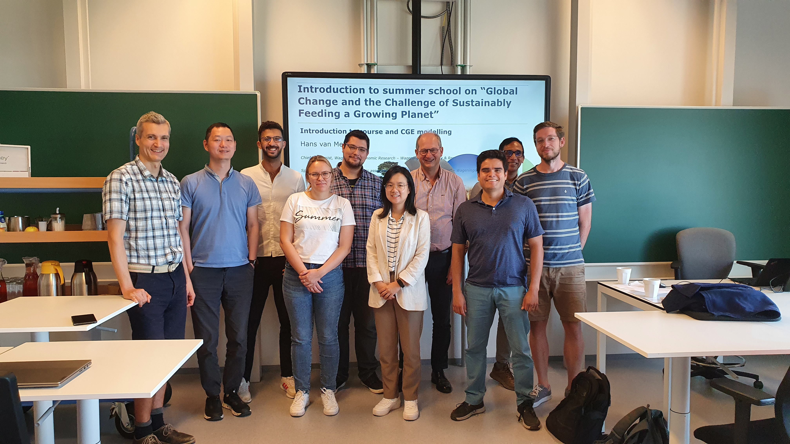
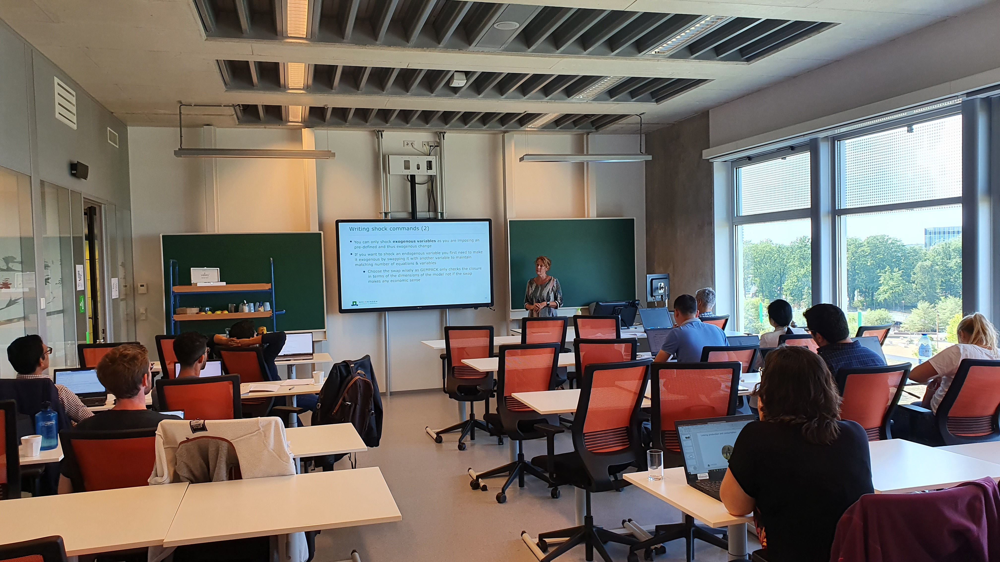

In the week of August 29 – September 2, Wageningen Economic Research in collaboration with Wageningen University hosted the first MAGNET Summer School - Global Change and the Challenge of Sustainably Feeding a Growing Planet. MSc and/or PhD students with prior economic and mathematical knowledge were eligible to apply. There were 9 participants across different European institutions that were interested in MAGNET model applications in the areas of bioeconomy, food security and others.
The theoretical part of the course introduced general equilibrium theory and applications in a systematic way - from the basics of CGE modelling, introduction to GTAP, to specifics of MAGNET model, its modules and the potential future advancements. The practical part under the guidance of experienced MAGNET modellers provided the participants a unique opportunity to build step-by-step their own simple CGE model in Gempack software.


The full week MAGNET Summer School also provided the opportunity to get to know the participants and the lecturers in a more informal way.
Given the positive feedback received from the participants it is possible there will be a follow-up MAGNET course for more advanced users. Potentially interested students can already send email to hans.vanmeijl@wur.nl.
Contact: Hans van Meijl